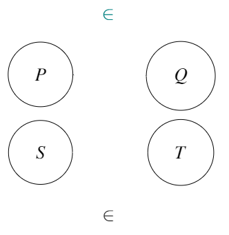
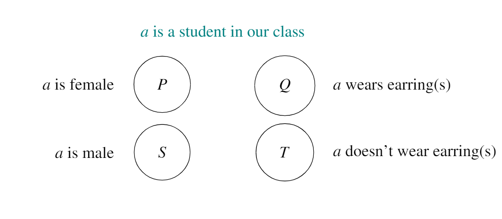
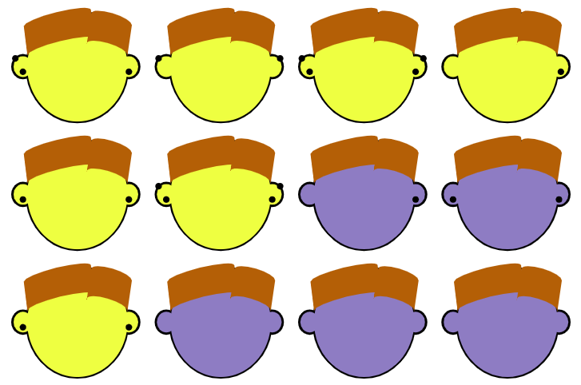
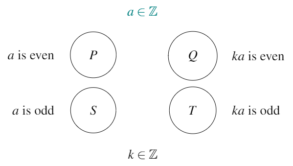
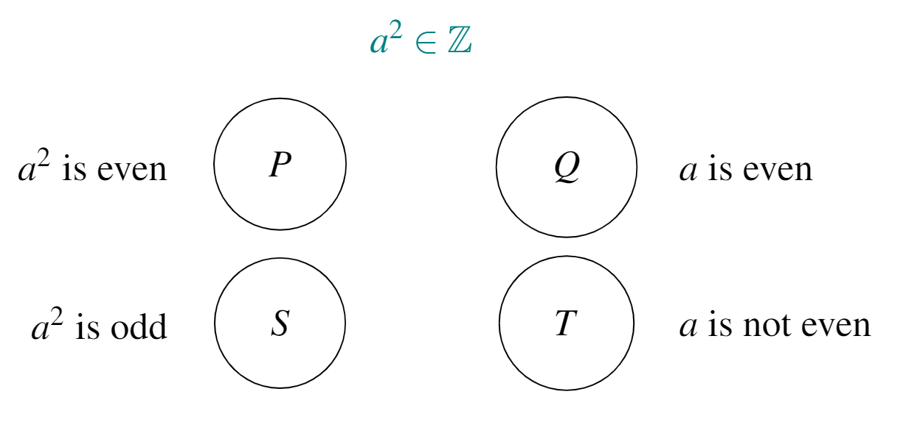

Chapter 15 A conjecture and its negation, converse, inverse, and contrapositive
15.1 \(\Rightarrow\) revisited
We discussed the symbol “\(\Rightarrow\)” in Chapter 9. We return to it here, clarifying its meaning a little further.
For sets \(A\) and \(B\), \(A \leftarrow B\) means “all elements in \(A\) go to \(B\).”
Consider the (empty) conjecture map below:

The conjectures we will meet in this course are generally of the form \(P \Rightarrow Q\) (e.g. “The product of three consecutive integers is divisible by \(6\),” “For any negative number \(a\), \(a^2 >a\),” “All primes are odd”). In other words:
- \(P \Rightarrow Q\): ALL elements in \(P\) go to \(Q\) (and never to \(T\)).
Some other possible relationships within this map are:
- \(P \Rightarrow T\): ALL elements in \(P\) go to \(T\) (and never to \(Q\)).
- \(S \Rightarrow Q\): ALL elements in \(S\) go to \(Q\) (and never to \(T\)).
- \(S \Rightarrow T\): ALL elements in \(S\) go to \(T\) (and never to \(Q\)).
The following relationships are also possible, but are different from those four above:
- \(Q \Rightarrow P\): ALL elements in \(Q\) came from \(P\) (i.e. no elements in \(S\) go to \(Q\)).
- \(T \Rightarrow P\): ALL elements in \(T\) came from \(P\) (i.e. no elements in \(S\) go to \(T\)).
- \(Q \Rightarrow S\): ALL elements in \(Q\) came from \(S\) (i.e. no elements in \(P\) go to \(Q\)).
- \(T \Rightarrow S\): ALL elements in \(T\) came from \(S\) (i.e. no elements in \(P\) go to \(T\)).
Let’s practise…
Exercise 15.1 Take a look at the following conjecture map40:

Write down the conjecture (\(P \Rightarrow Q\)) for this map.
For this map, write down the statement which is associated with each of the following: \(P \Rightarrow T\), \(S \Rightarrow Q\), \(S \Rightarrow T\), \(Q \Rightarrow P\), \(T \Rightarrow P\), \(Q \Rightarrow S\), \(T \Rightarrow S\).
How would we verify the truth value for each of the eight statements above? What would a counterexample for each of the eight statements above look like?
Solution:
Parts a and b are answered in the second and third columns of the table below. Part c is answered in the fourth and fifth columns of the table.
| Statement | If…then… | How to verify its truth value? | What would a counterexample look like? | |
|---|---|---|---|---|
| \(P \Rightarrow Q\) | All female students in our class wear earring(s). | If a student in our class is female, then that student wears earring(s). | Check each female student’s ears | A female student in our class who doesn’t wear earring(s) |
| \(P \Rightarrow T\) | No female students in our class wear earring(s). | If a student in our class is female, then that student doesn’t wear earring(s). | Check each female student’s ears | A female student in our class who wears earring(s) |
| \(S \Rightarrow Q\) | All male students in our class wear earring(s). | If a student in our class is male, then that student wears earring(s). | Check each male student’s ears | A male student in our class who doesn’t wear earring(s) |
| \(S \Rightarrow T\) | No male students in our class wear earring(s). | If a student in our class is male, then that student doesn’t wear earring(s). | Check each male student’s ears | A male student in our class who wears earring(s) |
| \(Q \Rightarrow P\) | All the earring-wearing students in our class are female. | If a student in our class wears earring(s), then that student is female. | Check the gender of all earring-wearers | A male student who wears earring(s) |
| \(T \Rightarrow P\) | All the non-earring-wearing students in our class are female. | If a student in our class doesn’t wear earring(s), then that student is female. | Check the gender of all non-earring-wearers | A male student who doesn’t wear earring(s) |
| \(Q \Rightarrow S\) | All the earring-wearing students in our class are male. | If a student in our class wears earring(s), then that student is male. | Check the gender of all earring-wearers | A female student who wears earring(s) |
| \(T \Rightarrow S\) | All the non-earring-wearing students in our class are male. | If a student in our class doesn’t wear earring(s), then that student is male. | Check the gender of all non-earring-wearers | A female student who doesn’t wear earring(s) |
Exercise 15.2 Consider the following class of twelve students. Female students are coloured yellow, male students are coloured purple. The earring(s) that the students wear are indicated with black dots.

Which of the eight statements from the previous Exercise are true for this class?
Solution:
The statements are reprinted from the previous exercise, for ease of reference, along with their truth values:
| Statement | If…then… | Truth value | |
|---|---|---|---|
| \(P \Rightarrow Q\) | All female students wear earring(s). | If a student is female, then that student wears earring(s). | True |
| \(P \Rightarrow T\) | No female students wear earring(s). | If a student is female, then that student doesn’t wear earring(s). | False |
| \(S \Rightarrow Q\) | All male students wear earring(s). | If a student is male, then that student wears earring(s). | False (some do but not all) |
| \(S \Rightarrow T\) | No male students wear earring(s). | If a student is male, then that student doesn’t wear earring(s). | False (some don’t but some do) |
| \(Q \Rightarrow P\) | All the earring-wearing students are female. | If a student wears earring(s), then that student is female. | False (some of the earring-wearers are male) |
| \(T \Rightarrow P\) | All the non-earring-wearing students are female. | If a student doesn’t wear earring(s), then that student is female. | False (in fact none of the non-earring-wearers are female!) |
| \(Q \Rightarrow S\) | All the earring-wearing students are male. | If a student wears earring(s), then that student is male. | False (some of them are female) |
| \(T \Rightarrow S\) | All the non-earring-wearing students are male. | If a student doesn’t wear earring(s), then that student is male. | True |
Exercise 15.3 Take a look at the following conjecture map from Chapter 8:

Write down the conjecture (\(P \Rightarrow Q\)) for this map.
For this map, write down the statement which is associated with each of the following: \(P \Rightarrow T\), \(S \Rightarrow Q\), \(S \Rightarrow T\), \(Q \Rightarrow P\), \(T \Rightarrow P\), \(Q \Rightarrow S\), \(T \Rightarrow S\).
Which of the eight relationships from questions a and b are true in this map, and which are false? For those which are false, can you find a counterexample which disproves them?
Solution:
| Statement | Truth value | Justification | Counterexample (if false) | |
|---|---|---|---|---|
| \(P \Rightarrow Q\) | If \(a\) is even, then \(ka\) is even41, for \(k \in \mathbb Z\). | True | An even integer multiplied by any integer remains even | No counterexample exists |
| \(P \Rightarrow T\) | If \(a\) is even, then \(ka\) is odd, for \(k \in \mathbb Z\). | False | Because \(P \Rightarrow Q\) | \(a=2, k=1\). Then \(ka=2 \neq\) odd. |
| \(S \Rightarrow Q\) | If \(a\) is odd, then \(ka\) is even, for \(k \in \mathbb Z\). | False | Sometimes an odd integer multiplied by another integer is even (if the second integer is even) but not always. We can’t use \(\Rightarrow\) unless every element of \(S\) goes to \(Q\) | \(a=1, k=1\). Then \(ka=1 \neq\) even. |
| \(S \Rightarrow T\) | If \(a\) is odd, then \(ka\) is odd, for \(k \in \mathbb Z\). | False | For the same reason that \(S \Rightarrow Q\) is false. Sometimes an odd integer multiplied by another integer is odd (if the second integer is odd) but not always. We can’t use \(\Rightarrow\) unless every element of \(S\) goes to \(T\) | \(a=1, k=2\). Then \(ka=2 \neq\) odd. |
| \(Q \Rightarrow P\) | If \(ka\) is even, with \(k \in \mathbb Z\), then \(a\) is even. | False | Not all elements in \(Q\) came from \(P\) - some came from \(S\) | \(ka=2, k=2\). Then \(a=1 \neq\) even. |
| \(T \Rightarrow P\) | If \(ka\) is odd, with \(k \in \mathbb Z\), then \(a\) is even. | False | In fact, no elements in \(T\) come from \(P\). | \(ka=3, k=1\). Then \(a=3 \neq\) even. |
| \(Q \Rightarrow S\) | If \(ka\) is even, with \(k \in \mathbb Z\), then \(a\) is odd. | False | Some elements in \(Q\) came from \(S\) but some came from \(P\). | \(ka=2, k=1\). Then \(a=2 \neq\) odd. |
| \(T \Rightarrow S\) | If \(ka\) is odd, with \(k \in \mathbb Z\), then \(a\) is odd. | True | Any element in \(T\) definitely came from \(S\) (i.e. none came from \(P\)). | No counterexample exists |
Exercise 15.4 Consider the following conjecture map:

Which of the eight relationships above are true for this map?
Be careful! According to this map, we know only that \(a^2\) is an integer (hence why we can partition the \(a^2\)s into evens and odds) but not whether \(a\) is an integer.
Solution:
- \(P \Rightarrow Q\), “If \(a^2\) is even, then \(a\) is even,” is false.
Counterexample: \(a^2 = 2\), \(a=\sqrt{2} \neq\) an even number. - \(P \Rightarrow T\), “If \(a^2\) is even, then \(a\) is not even,” is false.
Counterexample: \(a^2 = 4\), \(a=2 =\) an even number. - \(S \Rightarrow Q\), “If \(a^2\) is odd, then \(a\) is even,” is false.
Counterexample: \(a^2 = 9\), \(a=3 \neq\) an even number. - \(S \Rightarrow T\), “If \(a^2\) is odd, then \(a\) is not even,” is true.
- \(Q \Rightarrow P\), “If \(a\) is even, then \(a^2\) is even,” is true.
- \(T \Rightarrow P\), “If \(a\) is not even, then \(a^2\) is even,” is false.
Counterexample: \(a = 1\), \(a^2=1 \neq\) an even number. - \(Q \Rightarrow S\), “If \(a\) is even, then \(a^2\) is odd,” is false.
Counterexample: \(a = 2\), \(a^2=4 \neq\) an odd number. - \(T \Rightarrow S\), “If \(a\) is not even, then \(a^2\) is odd,” is false.
Counterexample: \(a = 1.1\), \(a^2=1.21 \neq\) an odd number.
This map assumes that gender is binary, at least within our class, so that each student identifies definitively as female or male. In fact, many people don’t neatly fit into either of the categories “male” or “female,” and identify themselves as having a non-binary gender. Therefore this example is overly simplistic and is used only for illustrative purposes.↩︎
The word always is implied here, and in all other statements in this table.↩︎